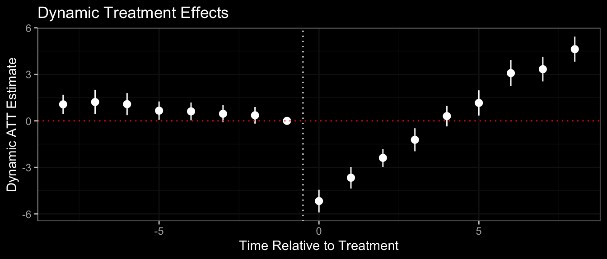

library(tidyverse)
# create first.treat
first.treat <- df %>%
select(treat, time, unit) %>%
filter(treat == 1) %>%
group_by(unit) %>%
summarise(first.treat = min(time))
# join first.treat to df
df <- left_join(df, first.treat)Two-Way Fixed Effects
What is TWFE?
Two-way fixed effects (TWFE) is the primary estimator used to estimate causal effects in difference-in-differences. The TWFE estimator is a regression model specified as follows:
\[ Y_{it} = \underbrace{\alpha_i + \gamma_t}_\text{fixed effects} + D_{it}\tau + \cov + \eps_{it} \]
\(Y_{it}\) is the outcome, \(D_{it}\) is the treatment, \(\b X_{it}\) is a vector of covariates (optional) for parallel trends, and \(\tau\) is the causal effect.
For dynamic treatment effects, the TWFE model is estimated as:
\[ Y_{it} = \underbrace{\alpha_i + \gamma_t}_\text{fixed effects} + \sum_{r ≠ -1} 1\{R_{it} = r\} \cdot \tau_r + \eps_{it} \]
\(R_{it}\) is a relative-time variable, that is equal to the time period \(t\) minus the initial treatment period of unit \(i\). \(1\{R_{it}=r\}\) is an indicator variable that equals 1 if \(R_{it} = r\), and 0 otherwise.
Fixed effect \(\alpha_i\) accounts/controls for differences between units, and \(\gamma_t\) accounts/controls for differences between time periods. If we account for differences between units and differences between time periods, the only possible confounders remaining are unit-specific trends over time. But with the parallel trends assumption, we rule out this type of confounder.
Thus, under the parallel trends assumption, there are no omitted confounders/variables, and our regression is exogenous. Since OLS is unbiased under exogeneity, our TWFE estimator for \(\tau\) is unbiased.
Issues with TWFE
TWFE has been shown to be a biased estimator (bad estimator) for the ATT and dynamic treatment effects when dealing with staggered treatment implementation. So when units begin treatment at different times, TWFE is biased.
Why is this? Goodman-Bacon (2021) shows that in a staggered setting, TWFE is actually a weighted average of 4 comparisons:
- Early-treated units vs. untreated units.
- Late-treated units vs. untreated units.
- Early-treated units vs. late-treated units before treatment.
- Early-treated units after treatment vs. late-treated units before and after treatment.
When we compare treatment to control, we want to compare treated to untreated units. The issue comes with the 4th comparison - we actually use late-treated units after receiving treatment as a untreated comparison. This is called the “forbidden comparison” problem of TWFE.
De Chaisemartin and D’Haultœuille (2020) show that there is another problem with TWFE - the weighting of these comparisons when aggregating these comparisons. For an accurate average treatment effect on the treated (ATT), we in theory want to weight each comparison by the proportion of the sample size each comparison contains. For example, if more units are in the early-treated units, we would want to weight that comparison more.
The issue with TWFE is that not only does it not weight by group size, it doesn’t even always give positive weights. In fact, sometimes, TWFE will assign negative weights to certain comparisons. This is completely nonsensical, and has been shown to even reverse the sign of the true ATT in simulations.
Thus, TWFE is a biased estimator when it comes to staggered treatment designs. Since 2021, Econometricians have started developing modern estimators that resolve the issues with TWFE.
Brantly Callaway has a more detailed page on the issues with TWFE. Pedro Sant’Anna also has a powerpoint on the Bacon-Goodman decomposition.
R: Setting Up the Data
Our dataset df should be a panel or repeated cross-section, and have the following variables:
| Variable | Description |
|---|---|
unit |
A variable indicating the units/individual an observation belongs to in our data.* |
time |
A variable indicating time-periods in our study for each observation. |
outcome |
Outcome variable for each observation. |
treat |
Treatment variable for each observation. Should equal 1 for treated units and 0 for untreated units. |
rel.time |
A relative time variable that indicates for the given period \(t\) of an observation, how many time-periods away did the unit \(i\) first get the treatment. For the never-treated observations, set the value to a very large or small number (-1000 is a common choice). |
covar |
(optional) covariate(s) to condition for parallel trends. |
*For repeated cross-section, the unit variable should be instead the group/level of which treatment is assigned. For example, if treatment is assigned by county/state, use that as the unit variable.
Creating a rel.time Variable
To create a rel.time variable if your dataset does not have one, we first need to create a first.treat variable, which indicates the period that a unit first gets treated.
Now, we can create a rel.time variable:
df$rel.time <- df$time - df$first.treat
# now set our never-treated rel.time values to a super large or small num
df$rel.time <- replace_na(df$rel.time, -1000)R: Estimating the ATT
We use the fixest package to run a TWFE model:
library(fixest)
att <- feols(
fml = outcome ~ treat + covar | unit + time, # covariate is optional
data = df, # your data
vcov = ~unit # cluster SE by unit
)
summary(att)#> OLS estimation, Dep. Var.: outcome
#> Observations: 950
#> Fixed-effects: unit: 95, time: 10
#> Standard-errors: Clustered (unit)
#> Estimate Std. Error t value Pr(>|t|)
#> treat -3.68310 0.361071 -10.2005 < 2.2e-16 ***
#> covar 1.01833 0.032416 31.4142 < 2.2e-16 ***
#> ---
#> Signif. codes: 0 '***' 0.001 '**' 0.01 '*' 0.05 '.' 0.1 ' ' 1
#> RMSE: 1.60906 Adj. R2: 0.691054
#> Within R2: 0.623425The coefficient of treat is our estimate of the ATT - the causal effect of treatment on those who receive the treatment. The significance is given by Pr(>|t|) (the p-value) and the stars *** .
Extracting ATT Directly
If you need to extract the att directly (to create tables or graphs), we can use the coef() function in the fixest package:
coef(att)#> treat covar
#> -3.683101 1.018332This is a table, so we can subset the treatment coefficient directly to extract it.
coef(att)[1]#> treat
#> -3.683101We can also directly extract confidence intervals in a similar way.
confint(att)#> 2.5 % 97.5 %
#> treat -4.4000165 -2.966186
#> covar 0.9539689 1.082695This is a table, so we can subset the treatment coefficient directly to extract it.
confint(att)[1,1]
confint(att)[1,2]#> [1] -4.400017
#> [1] -2.966186R: Estimating Dynamic Effects
We use the fixest package to run a TWFE model for dynamic effects:
library(fixest)
dynamic <- feols(
fml = outcome ~ i(rel.time, ref = c(-1, -1000)) + covar | unit + time,
# Do not change -1 in c(). You change -1000 to the value of never-treated for rel.time
data = df, # your data
vcov = ~unit # cluster SE by unit
)
# summary(dynamic) if you want to find the actual values of coefficientsWe can plot these results.
library(ggfixest)
library(ggplot2)
plot <- ggiplot(
# required options
object = dynamic, # input your dynamic model object
ref.line = FALSE, # we will add our own line later
# optional aesthetic options
xlab = "Time Relative to Treatment", # x-axis label
ylab = "Dynamic ATT Estimate", # y-axis label
main = "Dynamic Treatment Effects", # title for plot
)
plot +
# select how many period to display
xlim(-8, 8) +
# add reference lines for treatment beginning and 0 causal effect
geom_vline(xintercept = -0.5, linetype = 3) +
geom_hline(yintercept = 0, linetype = 3, color = "red") +
# ggplot theme (optional, change to your liking)
theme_bw()
Here we can see all of our dynamic treatment effects plotted. We can split the dynamic treatment effects into 2 groups for interpretation purposes.
- Pre-treatment (before the white dotted line). If parallel trends assumption is met, then the confidence intervals of the estimates should cover 0 (the red line).
In this example, we can see evidence that parallel trends is violated.
- Post-treatment (after the white dotted line). These coefficients represent the treatment effect over time. If their confidence intervals do not include 0, that means the treatment effect is significant.
In this example, we can see the initial post-treatment periods have negative effects, but this becomes positive as the years go on.